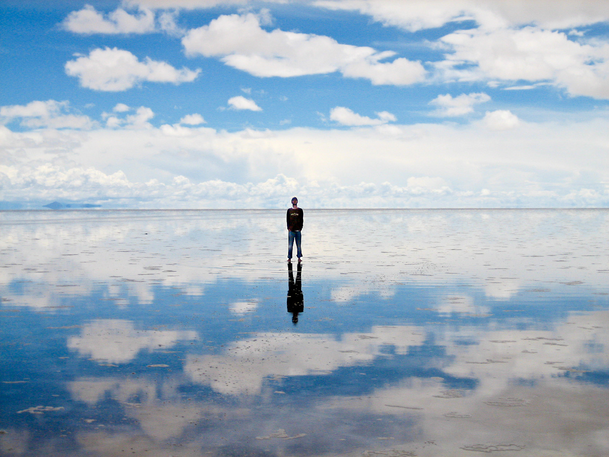

このページでは、ボリビアとはどんな国か紹介したいと思います。
ボリビア(正式名称：ボリビア多民族国)とは南アメリカ大陸西部に位置する国です。
有名な観光スポットで言えば、「ウユニ塩湖」があります。

日本とボリビアの色々を比較します。
| ボリビア | 日本 | |
|---|---|---|
| 人口 | 1167万人 | 1億2400万人 |
| 面積 | 1,098,581km² | 377,973.89km² |
| 人口密度 | 10.8人/km² | 333.7人/km² |
| 公用語 | スペイン語など | 日本語 |
| GDP | 368億3900万ドル | 4兆2308億ドル |
| 通貨 | ボリビアーノ[Bs] | 円[JPY] |
wikipedia:日本について
wikipedia:ボリビアについて
オリジナルのアップロード者は英語版ウィキペディアのChechevereさん - Picture Ezequiel Cabrera; en.wikipedia からコモンズに移動されました。, CC 表示 3.0, リンクによる